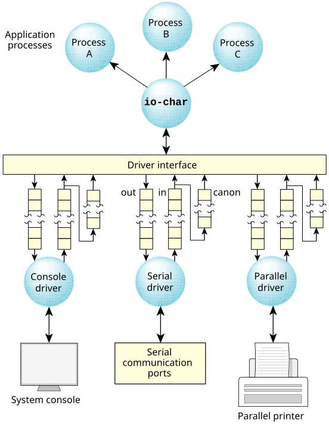

The io-char library manages the flow of data between an application and the device driver. Data flows between io-char and the driver through a set of memory queues associated with each character device.
Three queues are used for each device. Each queue is implemented using a first-in, first-out (FIFO) mechanism.

Received data is placed into the raw input queue
by the driver and is consumed by io-char only
when application processes request data. (For details on raw
versus edited or canonical input, see the section
Input modes
later in this chapter.)
The io-char module places output data into the
output queue to be consumed by the driver as characters are
physically transmitted to the device. The module calls a
trusted routine within the driver each time new data
is added so it can kick
the driver into
operation (in the event that it was idle). Since output
queues are used, io-char implements
write-behind for all character devices. Only when
the output buffers are full will io-char cause
a process to block while writing.
The canonical queue is managed entirely by io-char and is used while processing input data in edited mode. The size of this queue determines the maximum edited input line that can be processed for a particular device.
The sizes of these queues are configurable using
command-line options. Default values are usually more than
adequate to handle most hardware configurations, but you can
tune
these to reduce overall system memory
requirements, to accommodate unusual hardware situations, or
to handle unique protocol requirements.
Device drivers simply add received data to the raw input queue or consume and transmit data from the output queue. The io-char module decides when (and if) output transmission is to be suspended, how (and if) received data is echoed, etc.